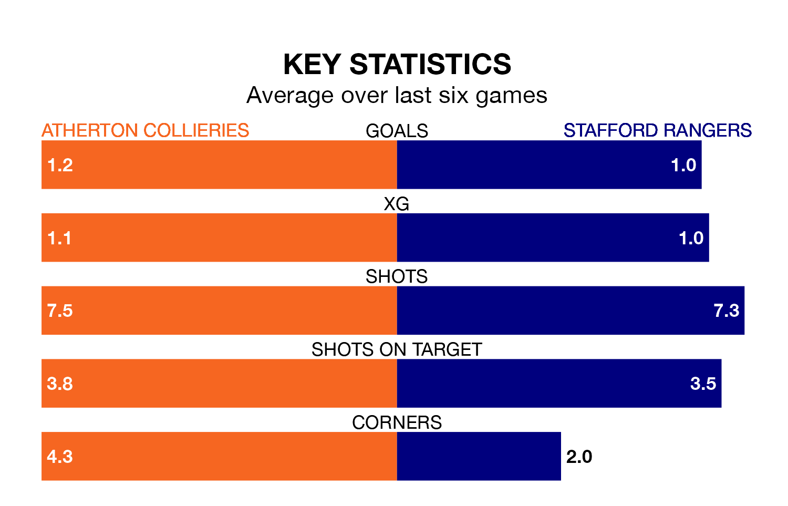

Struggling Atherton Collieries face Stafford Rangers on Saturday looking to build on a win in their last league outing.
After securing all three points with a 0-3 victory over Ilkeston Town on April 6, Atherton Collieries sit 21st in the Northern Premier League.
They travel to play a Stafford side 19th in the standings, who also won their last match, 1-0 against Whitby Town.
Atherton Collieries are in bad form in the Northern Premier League, with one win and five losses from their last six games.
With three wins and three losses over that period, Stafford's form is much better – they have taken nine points from 18, compared to the hosts' three.
In the last 10 years, Atherton Collieries and Stafford have played each other on six occasions. They won two each, and they drew twice.
On average, Atherton Collieries scored 1.3 goals and Stafford 1.2 in those matches.
Their last meeting was on November 28, when Stafford won 2-0 at home.
With 36 goals in 37 games so far this season, Rangers are the league's second-lowest scorers with 1.0 goals per game. And they are conceding more than average, letting in 72 goals at a rate of 1.9 per game.
Atherton Collieries are also below average scorers, with 1.3 goals per game, compared to a league average of 1.6. They have conceded 2.5 goals per game.
Updated: 10:01 (UTC), 12/04/24